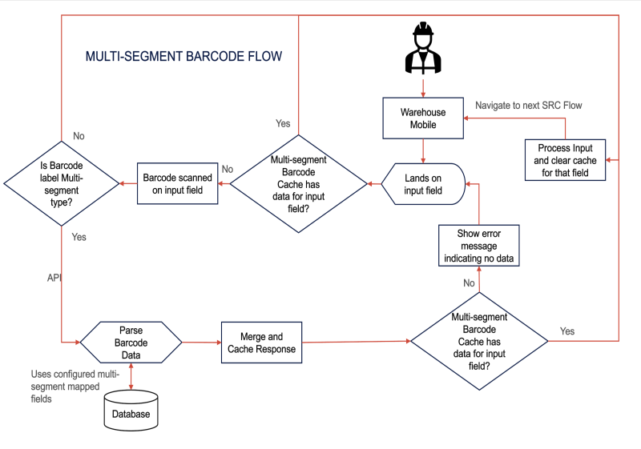

Multi-segment GS1 Scanning in Warehouse Mobile
Warehouse Mobile GS1 scanning is configuration-driven and uses multi-segment barcode setup. This approach is based on supported label types, barcode type recognition, application identifier definitions, and mapped field records.
Unlike legacy RF receiving, Warehouse Mobile GS1 scanning is not driven by a GS1 scan required flag and application identifier template tied to receiving preference.
Topics covered:
Configuring GS1 Scanning
Overview
Configuration determines which barcode types are supported, how barcode segments are interpreted, and which Warehouse Mobile fields are populated from each scanned value.
Configuration Overview
- Label Type Configuration: Determines whether a scanned barcode matches a supported multi-segment label before parsing begins. When multiple label definitions match, SCALE applies configuration priority.
- Application Identifier Configuration: Defines what each barcode segment represents, such as item, quantity, lot, serial number, expiration date, and license plate. Both fixed-length and variable-length identifiers are supported. For GS1-128 parsing, SCALE supports FNC1 or group separator handling where required.
- Mapped Field Configuration: Determines which Warehouse Mobile field receives each parsed barcode value so the same barcode data can be reused across flows.
- Warehouse Mobile Flow Behavior: Uses mapped fields to update payloads and populate current transaction flow inputs. Depending on configuration, scans can auto-fill values and trigger auto-execute behavior when supported.
Configure GS1 Scanning
- Configure supported barcode types and label definitions that Warehouse Mobile should recognize.
- Define application identifiers for each supported barcode format.
- Map each application identifier to the Warehouse Mobile field that receives the parsed value.
Application Identifier Configuration Screen
Each application identifier entry maps a barcode segment to a specific Warehouse Mobile field. Use the Mapped Field dropdown to select the field that receives the parsed value. Enable Auto Execute to trigger automatic execution when the value is populated, and Auto Fill to populate the field without requiring user confirmation.
Mapped Field and SRC JSON Alignment
The mapped field name configured in the Application Identifier record must match the name property of the corresponding SRC JSON field definition. The mapped field value returned by the parser includes a Value, AutoFill, and AutoExecute setting that SCALE uses to populate the Warehouse Mobile input.
GS1 Scanning
Overview
Use GS1 scanning to capture multiple data elements from a barcode during Warehouse Mobile processing. System supports configurable multi-segment barcode handling.
GS1 scanning can extract values such as item, quantity, lot, serial number, expiration date, and license plate. Parsed values are mapped to configured Warehouse Mobile fields so the system can populate the correct inputs during receiving and work execution.
If a scanned barcode matches a supported label type, SCALE invokes the multi-segment parser. If no supported label type matches, or parsing fails, SCALE treats the value as a normal barcode.
Multi-segment Parser Response
When a barcode matches a configured multi-segment label type, SCALE parses the barcode data and returns a structured response. The response includes an IsMultiElementBarcode flag and a Data object containing one entry per mapped field, each with the parsed value, AutoExecute, and AutoFill settings. SCALE uses these settings to populate and, where applicable, auto-execute the corresponding Warehouse Mobile input fields.
Multi-segment Barcode Flow
The following diagram shows the end-to-end multi-segment barcode flow used by Warehouse Mobile, including cache checks, barcode type validation, parse and merge behavior, and no-data error handling.

Where GS1 Scanning Is Used
- Receiving flows in Warehouse Mobile
- Work execution flows in Warehouse Mobile
Receiving with GS1 Scanning
Overview
During Warehouse Mobile receiving, SCALE can parse a supported GS1 barcode and use mapped fields to populate receiving inputs. This reduces manual keying by allowing a scan to provide more transaction data in fewer steps.
In receiving flows, users can scan GS1 barcodes during item scanning and, where applicable, lot scanning. At item scanning, only configured item barcode formats are considered. At lot scanning, only configured lot barcode formats are considered.
Receiving Notes
- If scanned item barcode data includes lot and expiration date, SCALE updates the request payload and skips related lot entry pages.
- If scanned data includes only GTIN or item information, users complete remaining required prompts later in the flow for lot-controlled items.
- If the scanned item cross reference is associated with a specific unit of measure, SCALE uses that unit of measure on quantity entry.
- If a barcode does not exactly match a configured Warehouse Mobile GS1 format, SCALE returns the normal validation error for the current receiving step.
Receive Inventory with GS1 Scanning
- Start the receipt check-in transaction in Warehouse Mobile.
- Scan the barcode in the current GS1-enabled receiving input field.
- Allow SCALE to parse the barcode and fill configured values when the barcode matches a configured format.
- Review populated values and complete any remaining prompts not supplied by barcode data.
- Complete remaining required steps, such as quantity, license plate, lot, or expiration date, if needed.
- Complete the receiving transaction.
Executing Work with GS1 Scanning
Overview
GS1 scanning can be used in Warehouse Mobile work execution flows. Parsed values are mapped to configured fields for the flow so users can complete tasks with less manual entry.
Execute Work with GS1 Scanning
- Open the Warehouse Mobile work execution flow configured for GS1 scanning.
- Scan the barcode in the current input field.
- Allow SCALE to parse the barcode and populate configured fields when a supported label type is matched.
- Confirm populated values and complete any additional required prompts.
- Continue the transaction until completion.
Notes
- Fields populated during work execution depend on mapped field configuration for that flow.
- Supported behavior is configuration-driven instead of hard coded to a single barcode pattern.
- If parsing fails, SCALE handles the scan as a normal barcode.